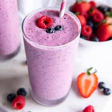

Greek Yogurt Berry Smoothie
>

Description
This smoothie is delicious and highly customizable. Try swapping the kale for spinach, the hemp seeds for cashews or almond butter, or the frozen banana for frozen cauliflower.
Ingredients
- 350g water
- 30g hemp seeds
- 30g kale
- 200g greek yogurt
- 80g frozen banana
- 150g frozen strawberries
- 150g frozen mixed berries
Steps
- Add all ingredients to blender
- Blend on low for 30 seconds
- Blend on high for 2-3 minutes until smooth